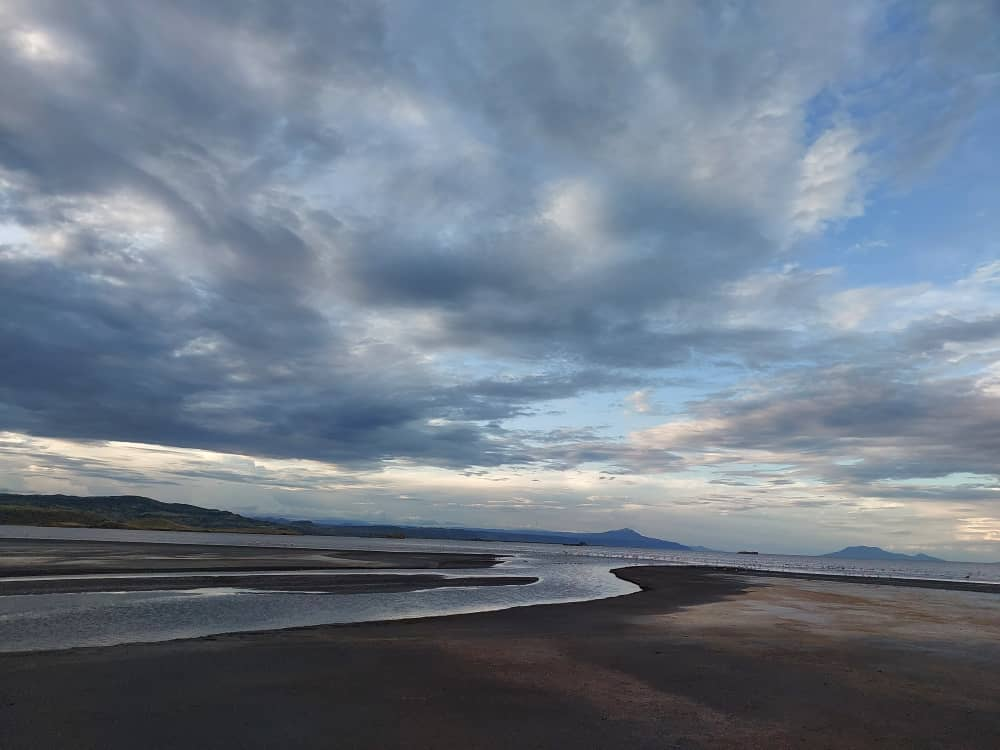
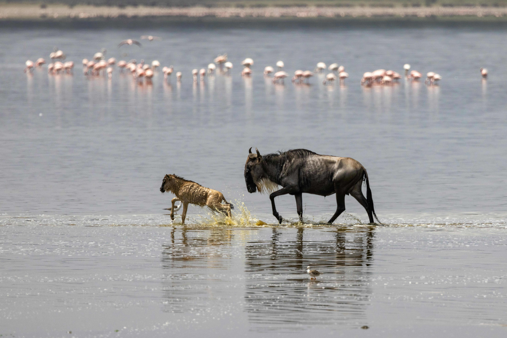

Lake Natron Adventure
Discover the stunning beauty of Lake Natron, northern Tanzania's unique photogenic gem.

Tour Details
Duration: 5 Days / 4 Nights
Price: Starting from $2,800 per person
Accommodation: Comfortable campsites and lodges
Included:
- Safari with expert guide
- All meals and hot beverages
- Transportation & guided tours
Excluded:
- International flights & visa fees
- Travel insurance
Itinerary
Day 1 — Arrival in Arusha & Transfer to Lake Natron
Arrive at Kilimanjaro International Airport or Arusha Airport and meet your guide. Begin your journey northward towards Lake Natron, taking in scenic landscapes along the way. Check-in at your comfortable campsite or lodge and enjoy an evening briefing and dinner under the stars.
- Accommodation: Lakeside campsite or lodge
- Travel time: ~5–6 hours from Arusha
Day 2 — Explore Lake Natron & Flamingo Breeding Grounds
Wake up early to witness the flamingos feeding in the lake’s red-tinged waters. Explore the surrounding salt flats and soda shores, rich in birdlife and geological wonders. Photography opportunities abound with the dramatic colors and reflections.
- Birdwatching & photography
- Optional evening walk around the lake
Day 3 — Visit Ol Doinyo Lengai Volcano
After dinner arround 10pm the journey starts wher you will drive directly to the mountaintain's starting point and leave your car there and the hike may start arround midnigh,the hike will take more than six hours, whereas you will be back to the car parking around 10am or 12pm when late. There will be targeting of the sunrise but seeing the red lava which can only be seen clearly when is dark.
- Optional guided Maasai village visit
- Photo ops at the volcano and scenic landscapes
Day 4 — Morning Hike & Lake Exploration
Embark on an early morning hike for sunrise over the lake. Spot more flamingos, other bird species, and perhaps wildlife grazing near the shores. Spend the day exploring nearby natural features before returning to your lodge for relaxation and dinner.
- Sunrise photography
- Guided hike and nature walks
Day 5 — Return to Arusha & Departure
After breakfast, begin your scenic drive back to Arusha. Depending on flight schedules, you may stop at local markets or viewpoints. Transfer to Kilimanjaro International Airport or Arusha Airport for onward travel.
- Travel time: ~5–6 hours to Arusha
- Optional souvenir shopping en route
Photo Gallery
